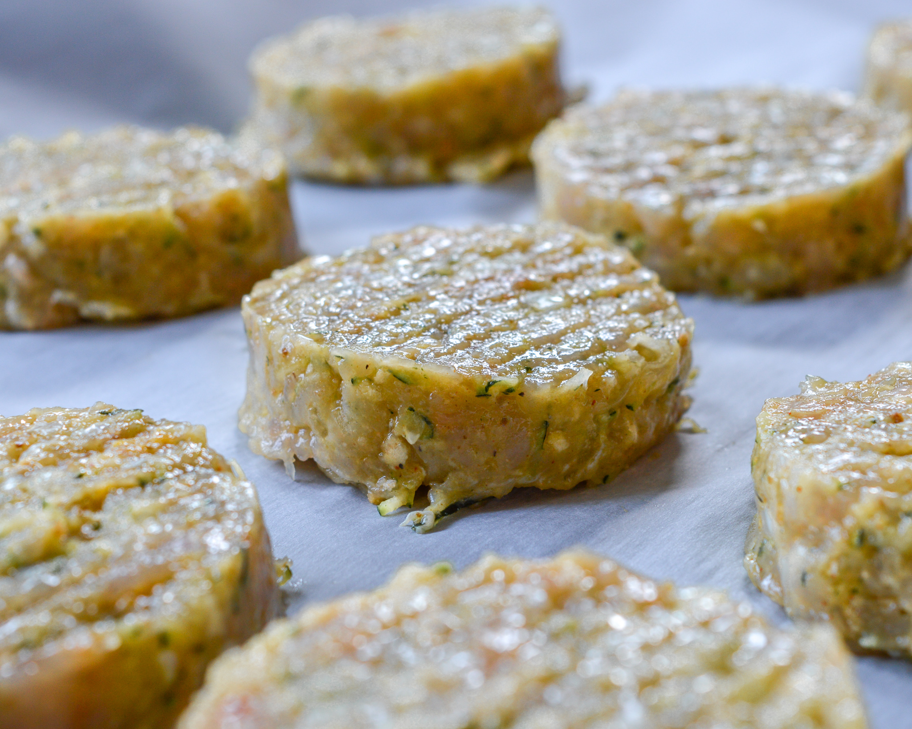

HOME
Turkey Burger

Tell me about it:
If you’re looking for a tasty and easy meal for the whole family, look no further than turkey burgers.
These burgers are not only delicious, but they’re also a great option for families with picky eaters.
Ingredients
- 1 Pound of ground turkey brest
- 1 Medium white onion
- 1/2 Cup bread crumbs
- 1 Egg
- 2 Garlic cloves
- 1 Tablespoon olive oil
- 1 Tablespoon salt
- 1 Teaspoon black pepper
- 1 Teaspoon paprika
Instruction
- Finely chop an onion, and grate zucchini and garlic.
- Mix ground turkey, onion, zucchini, egg, breadcrumbs, garlic, olive oil, and seasoning in a bowl.
- Shape patties by hand or using a press.
- Preheat the grill to 450°F and cook the burgers for 5 minutes on each side until the internal temperature
reaches 165°F.
- Let them sit for a few minutes and serve on a bun or as desired.